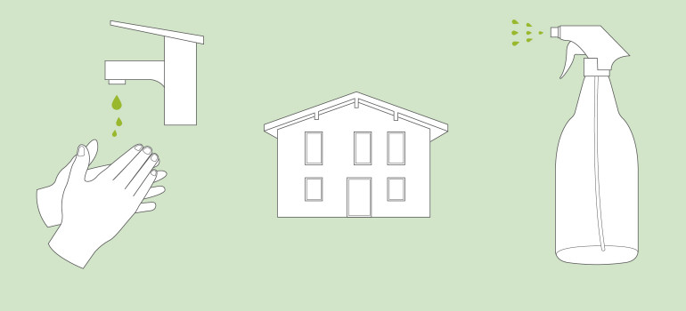
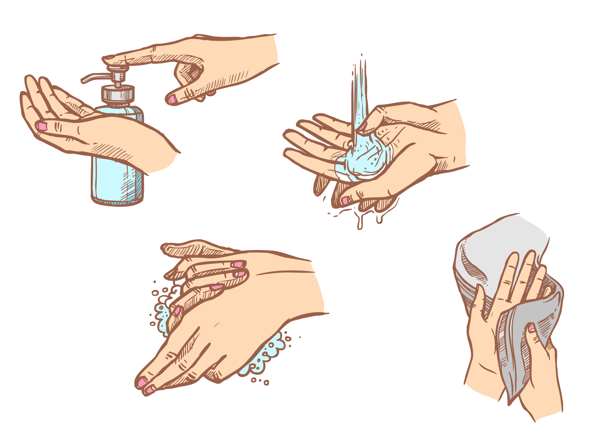

<ion-header>
  <ion-toolbar color="primary">
    <ion-title>Pflege Empfehlungen</ion-title>
    <ion-buttons slot="start">
      <ion-menu-button autoHide="false"></ion-menu-button>
    </ion-buttons>
  </ion-toolbar>
</ion-header>

<ion-content>

  <ion-list [hidden]="hideContent" *ngFor="let item of items | filter: searchTerm; let i = index">
  <div class="accordion-container">

    <mat-accordion class="example-headers-align">
      <mat-expansion-panel>
        <mat-expansion-panel-header>
          <mat-panel-title class = "mat-expansion-title">
            {{item.careRecommendationTitle}}
          </mat-panel-title>
          <mat-panel-description>
          </mat-panel-description>
        </mat-expansion-panel-header>
        <swiper #swiper [config] = "config" class="swiper-container">
          <ng-template swiperSlide class="swiper-slide">
            
          </ng-template>
          <ng-template swiperSlide class="swiper-slide">
            
          </ng-template>
          <ng-template swiperSlide class="swiper-slide">
            
          </ng-template>
          <ng-template swiperSlide class="swiper-slide">
            
          </ng-template>
        </swiper>
        <h2>{{item.careRecommendationTitle}}</h2>
        <p> {{item.careRecommendation}}</p>
      </mat-expansion-panel>
    </mat-accordion>

  </div>
  </ion-list>
  <ion-text class="ion-text-center" color="primary">
    <h2>{{message}}</h2>
  </ion-text>

</ion-content>
